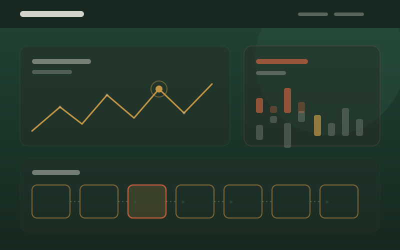

Case Study
Ghost House
A three-part Unity game where the interface is the main source of tension — the HUD only reveals what the player has earned the right to see.
The problem
Ghost House is set in a house that is actively breaking down. The design question was how much of that to show at any moment. A HUD that reports every anomaly removes the tension the anomalies exist to create, and a HUD that reports nothing makes the game unfair rather than mysterious.
The answer had to hold across three very different kinds of gameplay — observation, puzzle solving, and platforming — without becoming three separate interfaces.
Approach
I designed the three sections in the order players meet them, because the section a player is in determines what information the HUD is allowed to carry.
-
Section one
Anomaly detection. Players identify unusual changes in a room, and the HUD degrades as their signal gets noisier.
-
Section two
A seven-room puzzle sequence. The interface recedes almost entirely and the environment carries the information instead.
-
Section three
Parkour platforming. A minimal traversal HUD returns, tuned to stay readable while moving quickly.
Key design decisions

Signal strength is the puzzle. In the anomaly section, the player's job is to judge whether a reading is normal. Making the meter itself the thing being read means the skill being tested is interpretation, not pattern-matching against a highlighted object.
The HUD earns its information. Each section reveals only what it needs. The puzzle sequence shows almost nothing, which is what makes it tense — and because the UI already taught the player how to read the house in section one, the silence is comprehensible rather than confusing.
No markers on important objects. Lighting and camera framing do the pointing. An interaction prompt only appears once the player is close enough, so the world reads as a place first and a mechanism second.
Outcome
Ghost House shipped as a complete three-section experience with all three sections connected into one continuous run, playable as a Unity Play build.
If you have playtest feedback from this one — especially on whether players found the puzzle section fair without HUD support — that belongs here. It is the most useful thing you could add to this case study.
What I'd do next
The three sections escalate in difficulty but not in consequence. There is no fail state, so a player who struggles simply spends longer, which flattens the stakes the anomaly section works hard to create. Adding a real cost for missing an anomaly is the change I'd make first.